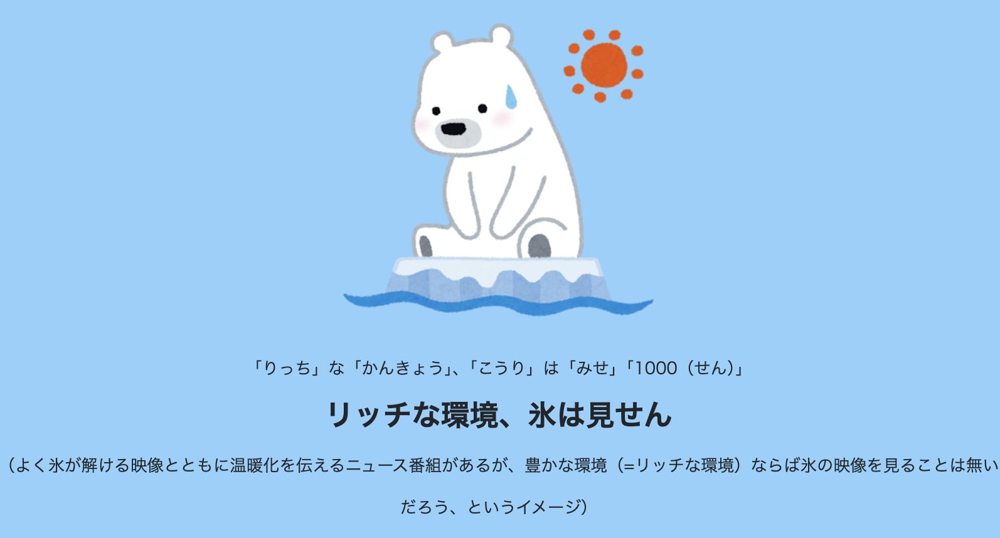
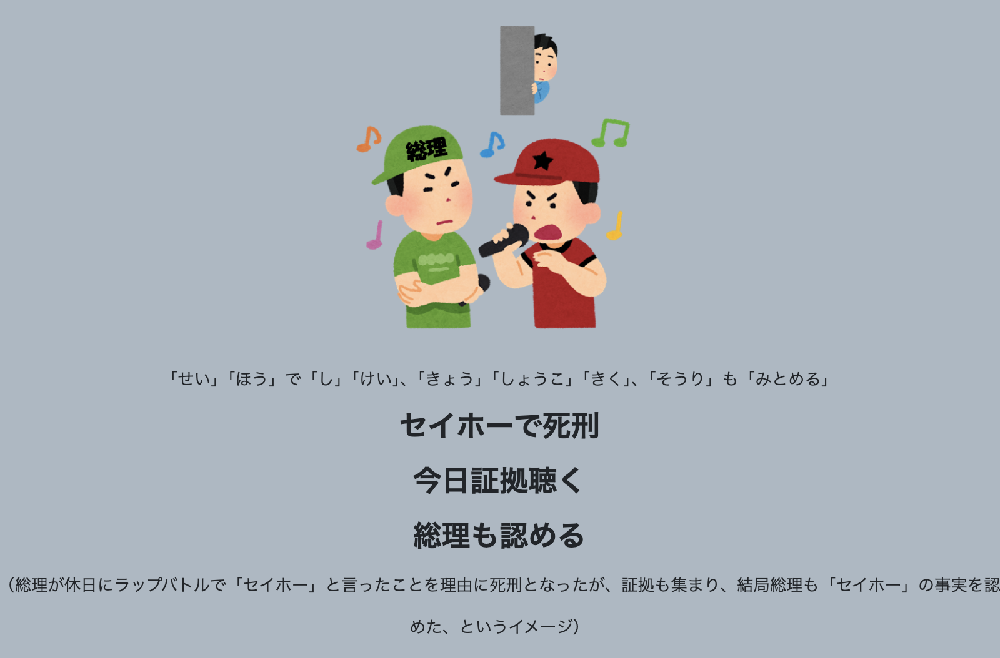

中小企業診断士 運営管理｜まちづくり三法・用途地域・廃棄物処理を体系的にマスター
脱サラした田中さん（35歳）。「地元にカフェを開きたい！」
物件を探し始めるが、不動産屋にこう言われた。
田中さんは探し直して、近隣商業地域に良い物件を発見。ここなら面積制限もほぼなし！
場所が決まった田中さん。建築士と打ち合わせすると...
田中さんのカフェは80m²の2階建て。こぢんまりした素敵な設計が完成した。
カフェは大繁盛。3年後、田中さんは郊外に大型カフェ＆ベーカリー（1,200m²）の2号店を計画。すると...
田中さんは駐車場計画、騒音対策、ゴミ収集計画をまとめて届出を完了。2号店もオープン！
ところが、2号店が繁盛した一方で、駅前の商店街がシャッター街になり始めた。市役所から相談が来る。
田中さんは駅前商店街に3号店をオープン。まちづくり三法（都市計画法・大店立地法・中心市街地活性化法）のすべてに関わることになった！
3店舗を経営するようになった田中さん。毎日大量のゴミが出る。
田中さんは許可業者と契約し、マニフェストを発行して適正処理。安い無許可業者���誘いは断った。
田中さんは環境にも配慮したいと考え、3Rに取り組むことに。
どこに何を建てるか
の土地利用ルール
大きなお店を出すとき
の周辺環境への配慮
寂れた商店街を
元気にする法律
家が中心
静かな環境を守る
お店・オフィスが中心
にぎやかなエリア
工場が中心
製造業のエリア
家庭から出るゴミ
市区町村が処理
事業活動から出るゴミ
排出事業者が責任
赤い空欄をクリックすると答えが見えます。
都市計画法＝住みよい街づくりのための法律。都市計画区域は原則都道府県が指定します（県またがり＝国土交通大臣）。
つまり、都市計画区域の中を「開発を進める場所」と「抑制する場所」に線引きすることです。
すでに市街地、もしくはおおむね10年以内に優先的に市街化を図る区域
→ 用途地域を必ず定める
市街化を抑制する区域
→ 原則として建物が建てられない
敷地面積に対する
建築面積の割合
＝ 上から見たとき
土地の何%を建物が占めるか
敷地面積に対する
延べ床面積の割合
＝ 全フロアの面積合計が
土地の何%か
大きなお店を出店するとき、周辺の生活環境を守るためのルール。
赤い空欄をクリックすると答えが見えます。
ある地方都市の市長・佐藤さん。人口が増え始めたのに、ルールなしで好き勝手に建物が建てられている。
佐藤市長は決断する。「街を区域に分けよう」
市街化区域の中をさらに細かく分ける。「住む場所」「買い物する場所」「工場の場所」。
ゾーンが決まっても、ギチギチに建物を建てたら日も当たらないし火事も怖い。
郊外に15,000m²の巨大モールの出店計画が持ち上がった。住民は不安。
郊外モールに客を取られ、駅前商店街がシャッター街に。佐藤市長が動く。
赤い空欄をクリックすると答えが見えます。
都市計画法とは、住みよい街づくりを行うための法律です。必要性のある場所を「都市計画区域」として指定し、規制をかけます。
都市計画区域の中を、開発を進めるエリアと抑制するエリアに分けることを「区域区分」（線引き）と呼びます。
すでに市街地となっている区域、もしくはおおむね10年以内に優先的に市街化を図る区域
用途地域を必ず定める
🏠 住宅・商業施設OK
市街化を抑制する区域
原則として建物が建てられない
🌾 農地・自然を守る
都市計画区域の外でも、郊外のインターチェンジ付近など便利な場所は乱開発が進む可能性があります。そのため「準都市計画区域」を指定し、行政が規制をかけられるようにしています。
用途地域とは、市街化区域の中をさらに細分化して、エリアごとに「何を建ててよいか」のルールを決める仕組みです。住居系・商業系・工業系の3分類・13種類があり、それぞれ建てられる建物の種類や規模が異なります。
| 区分 | 用途地域 | 特徴 |
|---|---|---|
| 住居系 (8種) | 第一種低層住居専用 | 低層住宅用で最も厳しい。店舗は住居兼用の場合のみ可能 |
| 第二種低層住居専用 | 小規模な店舗（150m²以下）OK | |
| 第一種中高層住居専用 | 中高層住宅。500m²以下の店舗OK | |
| 第二種中高層住居専用 | 1,500m²以下の店舗OK | |
| 第一種住居地域 | 3,000m²以下の店舗OK | |
| 第二種住居地域 | 10,000m²以下の店舗OK | |
| 準住居地域 | 幹線道路沿い。10,000m²以下の店舗OK | |
| 田園住居地域 | 都市部で低層住居と農地が混在する地域。150m²以内の出店が可能 | |
| 商業系 (2種) | 近隣商業地域 | 日用品の商業施設。ほぼ制限なし |
| 商業地域 | 店舗面積の制限なし。繁華街 | |
| 工業系 (3種) | 準工業地域 | 軽い工業。店舗も住宅もOK |
| 工業地域 | 工場中心。住宅もOK | |
| 工業専用地域 | 住宅が建てられない唯一の地域 |
赤い空欄をクリックすると答えが見えます。
この区域区分の上に、大店立地法や中心市街地活性化法などのまちづくり三法が関わってきます。
店舗面積1,000m²超の新設・変更時に届出が必要。配慮すべき事項：
| 配慮事項 | 具体例 |
|---|---|
| 交通 | 駐車場台数、出入口の位置、渋滞対策 |
| 騒音 | 営業時間中・荷さばき時の騒音 |
| 廃棄物 | ゴミの保管場所、収集計画 |
| その他 | 街並みとの調和、防災 |

衰退した中心市街地を再生するための法律。

赤い空欄をクリックすると答えが見えます。
金属加工メーカーの工場長・鈴木さん。毎日、廃油・切削くず・段ボール・弁当ガラが山のように出る。
鈴木さんのもとに、見知らぬ業者から電話が。
鈴木さんは正規の許可業者と契約。マニフェストを発行することに。
ゴミ処理コストが年間300万円。鈴木さんは根本的にゴミを減らしたい。
赤い空欄をクリックすると答えが見えます。
そもそも出さない
＝発生を抑える
最も優先度が高い
もう一度使う
＝そのまま再使用
2番目に優先
原料に戻して使う
＝再生利用
3番目（最後の手段）
| 法律名 | 対象 | 主な特徴 |
|---|---|---|
| 容器包装リサイクル法（容器包装に係る分別収集及び再商品化の促進等に関する法律） | ペットボトル・缶・びん・紙・プラ容器等 | 消費者＝分別排出／市町村＝分別収集／事業者＝再商品化 |
| 家電リサイクル法（特定家庭用機器再商品化法） | エアコン・テレビ・冷蔵庫・洗濯機等 | 排出時に消費者がリサイクル料金を負担 |
| 食品リサイクル法（食品循環資源の再生利用等の促進に関する法律） | 食品廃棄物 | 食品関連事業者に再生利用等を義務化 |
| 建設リサイクル法（建設工事に係る資材の再資源化等に関する法律） | コンクリート・木材等の建設廃材 | 解体時の分別解体・再資源化を義務化 |
| 自動車リサイクル法（使用済自動車の再資源化等に関する法律） | 使用済自動車 | 新車購入時にリサイクル料金を前払い |
産業廃棄物（＝事業活動から出るゴミ）を出した会社には、法律で4つの義務があります。
マニフェストとは、産業廃棄物が正しく処理されたか追跡するための伝票のことです。
| 項目 | 内容 |
|---|---|
| 発行する人 | 排出事業者（＝ゴミを出した会社） |
| 記載する内容 | 廃棄物の種類・数量・運搬先・処分方法 |
| 保存期間 | 5年間 |
| 電子版 | 電子マニフェストも可能 |
このページに出てくる語呂合わせを一覧でまとめました。
語呂合わせのキーワードを穴埋めで確認！赤い空欄をクリックすると答えが見えます。